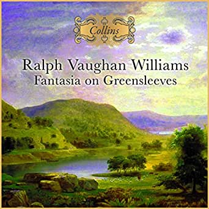

The oldest Folk actually was performed well before the Classical Age.
Many of the Classical composers of Russia, Hungary and Poland were sufficiently inspired by the older, indigenous tunes of those nations to adapt them into their own formal compositions.
The same connection between Folk and Classical applies in English history, when one looks at the compositions of Benjamin Britten, or Fantasia on Greensleeves by Ralph Vaughan-Williams. Greensleeves, as an indigenous English piece, is a few centuries older than Vaughan-Williams.
Either way, clearly those ordinary town and country people were really talented when it comes to writing authentic ditties and making the musical accompaniments. I personally feel grateful to all of them, hence this tiny tribute.
This lovely musical piece was written in 1651 by John Playford -
It is called 'Jamaica' and comes from an instruction book of English country dancing, entitled The English Dancing Master.